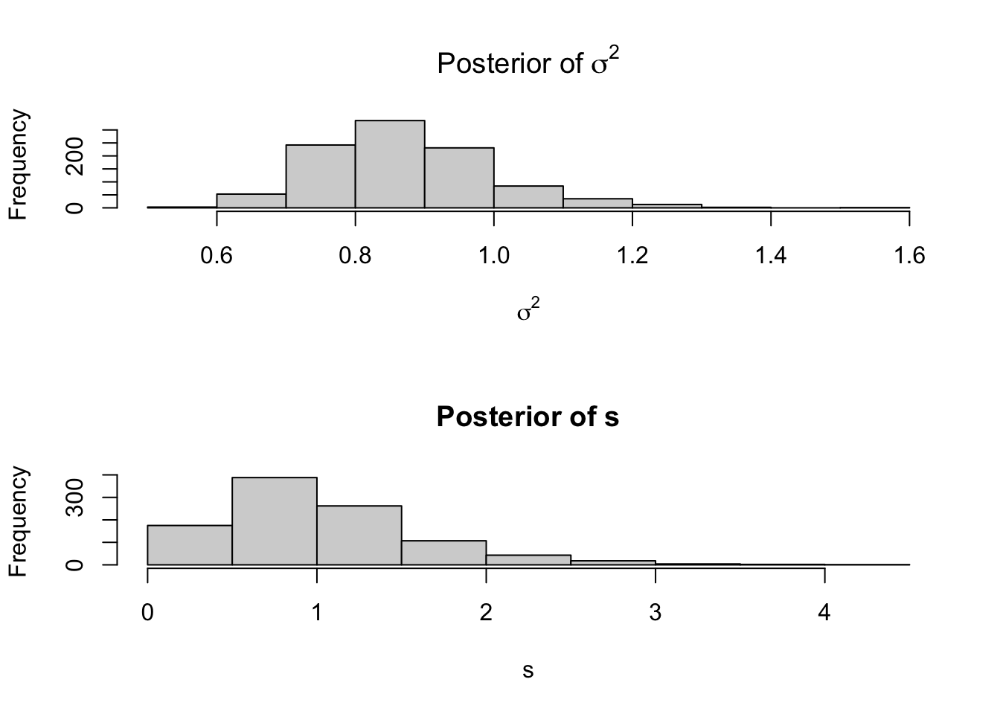

![]()
UC.local.simple.Gibbs.sampler = function(S, starting.values, priors){
# Estimation of a local level UC model with \tau_0 = 0 and no AR trend.
aux = starting.values
T = nrow(aux$Y)
posteriors = list(
tau = matrix(NA,T,S),
sigma = matrix(NA,2,S),
non.stationary.iterations = rep(NA,S)
)
for (s in 1:S){
# Sampling tau
###########################
V.tau.inv = priors$c^(-1)*t(aux$H)%*%(aux$H) + diag(T)
V.tau.inv = 0.5*(V.tau.inv + t(V.tau.inv))
b.tau = aux$Y
precision.L = t(bandchol(V.tau.inv))
epsilon = rnorm(T)
b.tau.tmp = forwardsolve(precision.L, b.tau)
tau.draw = backsolve(t(precision.L), b.tau.tmp + epsilon)
aux$tau = tau.draw
# Sampling sigma
###########################
sigma.s = priors$sigma.s +t(aux$Y)%*%aux$Y - t(aux$Y)%*%aux$tau%*%aux$Y
sigma.nu = priors$sigma.nu + 2*T
sigma.draw= sigma.s/rchisq(1,sigma.nu)
posteriors$tau[,s] = aux$tau
posteriors$sigma[,s] = aux$sigma
# posteriors$non.stationary.iterations[s] = ns.i
if (s%%1000==0){cat(" ",s)}
}
output = list(
posterior = posteriors,
last.draw = aux
)
return(output)
}Bayesian Unobserved Component Models
Abstract. We present the basics of Bayesian estimation and inference for unobserved component models on the example of a local-level model. The range of topics includes the conjugate prior analysis using normal-inverted-gamma 2 distribution and its extensions focusing on hierarchical modelling, conditional heteroskedasticity, and Student-t error terms. We scrutinise Bayesian forecasting and sampling from the predictive density.
Keywords. Unobserved Component Models, Local-Level Model, State-Space Bayesian Inference, Forecasting, Heteroskedasticity, Hierarchical Modelling, Gibbs Sampler, Simulation Smoother, Precision Sampling
Unobserved component models
Unobserved Component (UC) models are a popular class of models in macroeconometrics that use the state-space representation for unit-root nonstationary time series. The simple formulation of the model equations decomposing the series into a non-stationary and stationary component facilitates economic interpretations and good forecasting performance.
A simple local-level model
The model is set for a univariate time series whose observation at time \(t\) is denoted by \(y_t\). It decomposes the variable into a stochastic trend component, \(\tau_t\), and a stationary error component, \(\epsilon_t\). The former follows a Gaussian random walk process with the conditional variance \(\sigma_\eta^2\), and the latter is zero-mean normally distributed with the variance \(\sigma^2\). These are expressed as the model equations: \[\begin{align} y_t &= \tau_t + \epsilon_t,\\ \tau_t &= \tau_{t-1} + \eta_t,\\ \epsilon_t &\sim\mathcal{N}\left(0, \sigma^2\right),\\ \eta_t &\sim\mathcal{N}\left(0, \sigma_\eta^2\right), \end{align}\] where the initial condition \(\tau_0\) is a parameter of the model.
Matrix notation for the model
To simplify the notation and the derivations introduce matrix notation for the model. Let \(T\) be the available sample size for the variable \(y\). Define a \(T\)-vector of zeros, \(\mathbf{0}_T\), and of ones, \(\boldsymbol\imath_T\), the identity matrix of order \(T\), \(\mathbf{I}_T\), as well as \(T\times1\) vectors: \[\begin{align} \mathbf{y} = \begin{bmatrix} y_1\\ \vdots\\ y_T \end{bmatrix},\quad \boldsymbol\tau = \begin{bmatrix} \tau_1\\ \vdots\\ \tau_T \end{bmatrix},\quad \boldsymbol\epsilon = \begin{bmatrix} \epsilon_1\\ \vdots\\ \epsilon_T \end{bmatrix},\quad \boldsymbol\eta = \begin{bmatrix} \eta_1\\ \vdots\\ \eta_T \end{bmatrix},\qquad \mathbf{i} = \begin{bmatrix} 1\\0\\ \vdots\\ 0 \end{bmatrix}, \end{align}\] and a \(T\times T\) matrix \(\mathbf{H}\) with the elements: \[\begin{align} \mathbf{H} = \begin{bmatrix} 1 & 0 & \cdots & 0 & 0\\ -1 & 1 & \cdots & 0 & 0\\ 0 & -1 & \cdots & 0 & 0\\ \vdots & \vdots & \ddots & \vdots & \vdots\\ 0 & 0 & \cdots & 1 & 0\\ 0 & 0 & \cdots & -1 & 1 \end{bmatrix}. \end{align}\]
Then the model can be written in a concise notation as: \[\begin{align} \mathbf{y} &= \mathbf{\tau} + \boldsymbol\epsilon,\\ \mathbf{H}\boldsymbol\tau &= \mathbf{i} \tau_0 + \boldsymbol\eta,\\ \boldsymbol\epsilon &\sim\mathcal{N}\left(\mathbf{0}_T, \sigma^2\mathbf{I}_T\right),\\ \boldsymbol\eta &\sim\mathcal{N}\left(\mathbf{0}_T, \sigma_\eta^2\mathbf{I}_T\right). \end{align}\]
Likelihood function
The model equations imply the predictive density of the data vector \(\mathbf{y}\). To see this, consider the model equation as a linear transformation of a normal vector \(\boldsymbol\epsilon\). Therefore, the data vector follows a multivariate normal distribution given by: \[\begin{align} \mathbf{y}\mid \boldsymbol\tau, \sigma^2 &\sim\mathcal{N}_T\left(\boldsymbol\tau, \sigma^2\mathbf{I}_T\right). \end{align}\]
This distribution determines the shape of the likelihood function that is defined as the sampling data density: \[\begin{align} L(\boldsymbol\tau,\sigma^2|\mathbf{y})\equiv p\left(\mathbf{y}\mid\boldsymbol\tau, \sigma^2 \right). \end{align}\]
The likelihood function that for the sake of the estimation of the parameters, and after plugging in data in place of \(\mathbf{y}\), is considered a function of parameters \(\boldsymbol\tau\) and \(\sigma^2\) is given by: \[\begin{align} L(\boldsymbol\tau,\sigma^2|\mathbf{y}) = (2\pi)^{-\frac{T}{2}}\left(\sigma^2\right)^{-\frac{T}{2}}\exp\left\{-\frac{1}{2}\frac{1}{\sigma^2}(\mathbf{y} - \boldsymbol\tau)'(\mathbf{y} - \boldsymbol\tau)\right\}. \end{align}\]
Prior distributions
Bayesian estimation
Gibbs sampler
Simulation smoother and precision sampler
Analytical solution for a joint posterior
\[\underset{T \times 1}{y} = \begin{pmatrix} y_1 \\ y_2 \\ \vdots \\ y_T \end{pmatrix} \qquad \underset{T \times 1}{\tau} = \begin{pmatrix} \tau_1 \\ \tau_2 \\ \vdots \\\tau_T \end{pmatrix} \qquad \underset{T \times 1}{\epsilon} = \begin{pmatrix} \epsilon_1 \\ \epsilon_2 \\ \vdots \\ \epsilon_T \end{pmatrix} \qquad \underset{T \times 1}{\eta} = \begin{pmatrix} \eta_1 \\ \eta_2 \\ \vdots \\ \eta_T \end{pmatrix}\]
\[\underset{T \times T}{H} = \begin{pmatrix} 1 & 0 & 0 & \cdots & 0 & 0 \\ -1 & 1 & 0 & \cdots & 0 & 0 \\ 0 & -1 & 1 & \cdots & 0 & 0 \\ \vdots & \vdots & \ddots & \ddots & \vdots & \vdots \\ 0&0&0 & \cdots & 1 & 0 \\ 0 & 0 & 0 &0& -1 & 1 \end{pmatrix}\]
In this setting, we have out state equations as:
\[y = \tau + \epsilon \quad\quad\qquad \qquad \qquad \qquad \text{measurement equation}\]
\[\color{purple}{\mathbf{H\tau = \eta \implies \tau = H^{-1} \eta}} \quad \qquad \color{black}{ \qquad \qquad\text{state equation 1}}\]
The state equations in matrix notation are derived as follows:
- In an unobserved component model, the measurement equation is defined as \(y_t = \tau_t + \epsilon_t\), in matrix notation, we have:
\[y = \begin{pmatrix} y_1 \\ y_2 \\ \vdots \\ y_T \end{pmatrix} = \begin{pmatrix} \tau_1 \\ \tau_2 \\ \vdots \\ \tau_T \end{pmatrix} + \begin{pmatrix} \epsilon_1 \\ \epsilon_2 \\ \vdots \\ \epsilon_T \end{pmatrix} = \tau + \epsilon\] (2) We have for each t = 1,…,T, \(\tau_t = \tau_{t-1} + \eta_t\), and \(\tau_0 = 0\), so in matrix notation:
\[\tau = \begin{pmatrix} \tau_1 \\ \tau_2 \\ \vdots \\ \tau_T \end{pmatrix} = \begin{pmatrix} \eta_1 \\ \tau_1+ \eta_2 \\ \tau_2+ \eta_3 \\ \vdots \\ \tau_{T-1} + \eta_T \end{pmatrix} = \begin{pmatrix} 0 \\ \tau_1 \\ \vdots \\ \tau_{T-1} \end{pmatrix} + \eta\]
Moving the lagged \(\tau\) terms on the right hand side to the left:
\[\begin{pmatrix} 1 & 0 & \cdots & 0 \\ -1 & 1 & \cdots & 0 \\ \vdots & \ddots & \ddots & \vdots \\ 0 & 0 & -1 & 1 \end{pmatrix} \begin{pmatrix} \tau_1 \\ \tau_2 \\ \vdots \\ \tau_T \end{pmatrix} = \begin{pmatrix} \tau_1 \\ \tau_2-\tau_1 \\ \vdots \\ \tau_T - \tau_{T-1} \end{pmatrix} = \eta\]
Hence, we have: \[H \tau = \eta \implies \tau = H^{-1}\eta\]
We assume \(\mathbf{\color{purple}{\eta \sim \mathcal{N}(0_T, c\sigma^2I_T)}}\) and \(\sigma^2 \sim \mathcal{IG2}(s_{prior}, \nu_{prior})\)
The parameters to be estimated are: \(\mathbf{\color{purple}{\tau, \sigma^2}}\)
2.Prior distributions
- Prior distribution for \(\tau\)
From the state equation, we have: \[\tau = H^{-1}\eta\] we know that \[\mathbf{\color{purple}{\eta \sim \mathcal{N}(0_T, c \sigma^2 I_T) \implies H^{-1}\eta \sim \mathcal{N}(0_T, c\sigma^2(H^T H)^{-1})}}\] since \(Var(H^{-1}\eta) = H^{-1}Var(\eta)(H^{-1})^T =c\sigma^2(H^TH)^{-1}\) Then, the prior distribution of \(\tau|c\sigma^2\) is \[\tau|c\sigma^2 \sim \mathcal{N}(0_T, c\sigma^2(H^TH)^{-1}) \\ \propto (c\sigma^2)^{-\frac{T}{2}}exp\left(-\frac{\tau^TH^T H\tau}{2c\sigma^2}\right) \] (2) Prior assumptions for \(\sigma^2\)
\[\sigma^2 \sim \mathcal{IG2}(s_{prior}, \nu_{prior}) \propto (\sigma^2)^\frac{-\nu_{prior}+2}{2}exp\left(-\frac{s_{prior}}{2\sigma^2}\right)\]
3. Posterior distributions
- \(\mathbf{p(\tau|y, \alpha, \beta, \sigma^2_e)}\) We have, from the measurement equation: \[y = \tau + \epsilon\] since \(\epsilon \sim \mathcal{N}(0_T, \sigma^2I_T)\) \[y|\tau, \sigma^2 \sim \mathcal{N}(\tau, \sigma^2I_T)\propto (\sigma^2)^{-\frac{T}{2}}exp\left(-\frac{1}{2\sigma^2}(y-\tau)^T(y-\tau)\right)\] and the prior of \(\tau\) is:
\[\tau|c\sigma^2 \sim \mathcal{N}(0_T, c\sigma^2I_T) \\ \propto (\sigma^2)^{-\frac{T}{2}}exp\left(-\frac{\tau^TH^T H\tau}{2c\sigma^2}\right)\]
the prior of \(\sigma^2\) is: \[p(\sigma^2) \propto (\sigma^2)^-{\frac{\nu_{prior}+2}{2}}exp(-\frac{s_{prior}}{2\sigma^2})\]
The joint posterior of \(\tau\) and \(\sigma^2\) can be derived as follows:
\[ p(\tau, \sigma^2 |y) = \frac{p(\tau, \sigma^2, y)}{p(y)} \propto p(\tau, \sigma^2, y) = p(y | \tau, \sigma^2)p(\tau, \sigma^2) =p(y | \tau, \sigma^2)p(\tau|\sigma^2)p(\sigma^2) \]
\[ \propto (\sigma^2)^{-\frac{T}{2}}exp\left(-\frac{(y-\tau)^T(y-\tau)}{2\sigma^2}\right) \times (\sigma^2)^{-\frac{T}{2}}exp\left(-\frac{\tau^TH^T H\tau}{2c\sigma^2}\right) \times (\sigma^2)^{-\frac{\nu_{prior}+2}{2}} exp(-\frac{s_{prior}}{2\sigma^2}) \] \[ \propto exp(-\frac{y^Ty - 2\tau^T y + \tau^T\tau + c^{-1}\tau^TH^T H\tau}{2\sigma^2}) \times \\ exp(-\frac{s_{prior}}{2\sigma^2})\times(\sigma^2)^{-\frac{2T+\nu_{prior}+2}{2}} \] \[ = exp(-\frac{\tau^T(c^{-1}H^T H + I_T)\tau - 2\tau^Ty}{2\sigma^2}) \times \\ exp(-\frac{y^Ty + s_{prior}}{2\sigma^2})\times(\sigma^2)^{-\frac{2T+\nu_{prior}+2}{2}} \]
Let \(\bar{\Sigma} = (c^{-1}H^T H + I_T)^{-1}\), we have \[p(\tau, \sigma^2 |y) \propto exp(-\frac{\tau^T\bar{\Sigma}^{-1}\tau - 2\tau^Ty + y^T\bar{\Sigma}y}{2\sigma^2})exp(-\frac{y^Ty + s_{prior}-y^T\bar{\Sigma}y}{2\sigma^2})\times(\sigma^2)^{-\frac{2T+\nu_{prior}+2}{2}}\] Hence, \(\tau, \Sigma |y \sim \mathcal{NIG2}(\bar{\tau}, \bar{\Sigma}, \bar{\nu}, \bar{s})\) where \[\bar{\Sigma} = (c^{-1}H^T H + I_T)^{-1}\] \[\bar{\tau} = \bar{\Sigma}y\] \[\bar{\nu} = 2T+\nu_{prior}\] \[\bar{s} = s_{prior}+y^Ty-y^T\bar{\Sigma}y\]
Hierarchical modeling
Estimating gamma error term variance prior scale
To estimate the gamma error term variance, we need to firstly put a prior on the prior scale of and present its full conditional posterior distribution.
The prior is below:
\[\begin{align*} \sigma^2 \mid s &\sim \text{IG2}(s, \nu) \\ s &\sim \mathcal{G}(s, a) \end{align*}\]Then we use Gibbs sampling to draw samples from the full conditional distributions:
library(MCMCpack)
# Define prior parameters
s_prior <- 2
nu_prior <- 2
a_prior <- 2
# Define the function for the conditional posterior distribution
posterior_sampler <- function(y, n_iter = 1000) {
# Store samples
s <- rgamma(1, shape = a_prior, rate = s_prior)
sigma2 <- rinvgamma(1, shape = s, scale = nu_prior)
s_samples <- numeric(n_iter)
sigma2_samples <- numeric(n_iter)
for (i in 1:n_iter) {
shape_sigma2 <- (length(y) / 2) + s
rate_sigma2 <- (sum((y - mean(y))^2) / 2) + nu_prior
sigma2 <- rinvgamma(1, shape = shape_sigma2, scale = rate_sigma2)
shape_s <- a_prior + 1
rate_s <- s_prior + sigma2
s <- rgamma(1, shape = shape_s, rate = rate_s)
sigma2_samples[i] <- sigma2
s_samples[i] <- s
}
return(list(sigma2_samples = sigma2_samples, s_samples = s_samples))
}
set.seed(123)
y <- rnorm(100, mean = 0, sd = 1)
# Run the sampler
posterior_samples <- posterior_sampler(y, n_iter = 1000)
# Plot posterior distributions
par(mfrow = c(2, 1))
hist(posterior_samples$sigma2_samples, main = expression(paste("Posterior of ", sigma^2)), xlab = expression(sigma^2))
hist(posterior_samples$s_samples, main = "Posterior of s", xlab = "s")
Based on the sampling results, we summarize the posterior distribution of these parameters.
As can be seen from the histogram, the values of \(\sigma^2\) are mostly concentrated between 0.6 and 1.0. The distribution has a certain skewness, with a small number of higher values on the right, but it is generally concentrated.
Most of the values of \(s\) are concentrated between 0 and 2, indicating that the probability of s is higher in this range and the distribution has a longer right tail.
To derive the full conditional posteriors for \(\sigma^2\) and \(s\), we start with the joint posterior distribution of these parameters given the data \(y\).
The joint posterior distribution is below:
\[\begin{equation} p(\sigma^2, s \mid y) \propto p(y \mid \sigma^2) p(\sigma^2 \mid s) p(s) \end{equation}\]Full Conditional Posterior for \(\sigma^2\) is:
\[\begin{equation} p(\sigma^2 \mid y, s) \propto (\sigma^2)^{-\left( \frac{T}{2} + s + 1 \right)} \exp \left( -\frac{1}{\sigma^2} \left( \frac{(y - \tau)'(y - \tau)}{2} + \nu \right) \right) \end{equation}\]Full Conditional Posterior for \(s\) is:
\[\begin{equation} p(s \mid \sigma^2) \propto s^{a-1} \nu^s (\sigma^2)^{-(s+1)} \exp \left( -s - \frac{\nu}{\sigma^2} \right) \end{equation}\]Estimating inverted-gamma 2 error term variance prior scale
Estimating the initial condition prior scale
Student-t prior for the trend component
Estimating Student-t degrees of freedom parameter
The Student-t distribution is commonly used in statistical modeling to handle data with heavier tails than the normal distribution. An essential parameter of the Student-t distribution is the degrees of freedom \(\nu\), which controls the tail heaviness. In this note, we present the Bayesian estimation of the degrees of freedom parameter for an N-variate Student-t distribution using the Inverted-Gamma 2 (IG2) scale mixture of normals.
The N-variate Student-t distribution can be represented as a scale mixture of normals:
\[ \mathbf{y} \mid \mathbf{\mu}, \lambda \sim \mathcal{N}(\mathbf{\mu}, \lambda \mathbf{I}_N) \]
\[ \lambda \mid \nu \sim \mathcal{IG2}(\nu, \nu) \]
where:
- \(\mathbf{y}\) is the \(N\)-dimensional observation vector.
- \(\mathbf{\mu}\) is the mean vector.
- \(\lambda\) is the latent scale variable.
- \(\nu\) is the degrees of freedom parameter.
Derivation of Full Conditional Posteriors
Full Conditional Posterior of \(\lambda\)
Given the prior distribution:
\[ \lambda \mid \nu \sim \mathcal{IG2}(\nu, \nu) \]
The likelihood of the data given \(\lambda\) is:
\[ \mathbf{y} \mid \mathbf{\mu}, \lambda \sim \mathcal{N}(\mathbf{\mu}, \lambda \mathbf{I}_N) \]
The full conditional posterior of \(\lambda\) can be derived as follows:
Likelihood of \(\mathbf{y}\) given \(\mathbf{\mu}\) and \(\lambda\):
\[ p(\mathbf{y} \mid \mathbf{\mu}, \lambda) \propto \lambda^{-\frac{N}{2}} \exp\left(-\frac{(\mathbf{y} - \mathbf{\mu})'(\mathbf{y} - \mathbf{\mu})}{2\lambda}\right) \]
Prior for \(\lambda\) given \(\nu\):
\[ p(\lambda \mid \nu) \propto \lambda^{-\nu - 1} \exp\left(-\frac{\nu}{\lambda}\right) \]
Joint distribution:
\[ p(\mathbf{y}, \lambda \mid \mathbf{\mu}, \nu) = p(\mathbf{y} \mid \mathbf{\mu}, \lambda) p(\lambda \mid \nu) \]
Full conditional posterior:
\[ p(\lambda \mid \mathbf{y}, \mathbf{\mu}, \nu) \propto \lambda^{-\frac{N}{2}} \exp\left(-\frac{(\mathbf{y} - \mathbf{\mu})'(\mathbf{y} - \mathbf{\mu})}{2\lambda}\right) \lambda^{-\nu - 1} \exp\left(-\frac{\nu}{\lambda}\right) \]
Combining terms:
\[ p(\lambda \mid \mathbf{y}, \mathbf{\mu}, \nu) \propto \lambda^{-\left(\nu + \frac{N}{2} + 1\right)} \exp\left(-\frac{\nu + \frac{(\mathbf{y} - \mathbf{\mu})'(\mathbf{y} - \mathbf{\mu})}{2}}{\lambda}\right) \]
This is recognized as the kernel of an Inverted-Gamma 2 distribution:
\[ \lambda \mid \mathbf{y}, \mathbf{\mu}, \nu \sim \mathcal{IG2}\left(\nu + N, \nu + (\mathbf{y} - \mathbf{\mu})'(\mathbf{y} - \mathbf{\mu})\right) \]
Full Conditional Posterior of \(\nu\)
To estimate \(\nu\), we use the Metropolis-Hastings algorithm due to its non-standard form. The steps for deriving the full conditional posterior of \(\nu\) are as follows:
Likelihood of \(\lambda\) given \(\nu\):
\[ p(\lambda \mid \nu) = \frac{\left(\frac{\nu}{2}\right)^{\nu/2}}{\Gamma(\nu/2)} \lambda^{-\left(\nu/2 + 1\right)} \exp\left(-\frac{\nu}{2\lambda}\right) \]
Log-likelihood for \(\nu\) given \(\lambda\):
\[ \log p(\lambda \mid \nu) = \frac{\nu}{2} \log\left(\frac{\nu}{2}\right) - \log\Gamma\left(\frac{\nu}{2}\right) - \left(\frac{\nu}{2} + 1\right) \log \lambda - \frac{\nu}{2\lambda} \]
Log-prior for \(\nu\) (assuming a non-informative prior):
\[ \log p(\nu) = \text{constant} \]
Full conditional posterior:
The full conditional posterior for \(\nu\) is proportional to the product of the likelihood and the prior:
\[ p(\nu \mid \lambda) \propto p(\lambda \mid \nu) p(\nu) \]
Since \(p(\nu)\) is constant, we focus on \(p(\lambda \mid \nu)\):
\[ \log p(\nu \mid \lambda) = \frac{\nu}{2} \log\left(\frac{\nu}{2}\right) - \log\Gamma\left(\frac{\nu}{2}\right) - \left(\frac{\nu}{2} + 1\right) \log \lambda - \frac{\nu}{2\lambda} \]
This expression does not have a closed form, so we use the Metropolis-Hastings algorithm to sample from this posterior.
R Function for Gibbs Sampler
Below is the R function implementing the Gibbs sampler for estimating \(\nu\) using the IG2-scale mixture of normals representation.
metropolis_hastings_nu <- function(y, mu, n_iter, init_nu, proposal_sd) {
# Initialize parameter
nu <- init_nu
N <- length(y)
# Storage for samples
nu_samples <- numeric(n_iter)
# Log-likelihood function
log_likelihood <- function(nu, y, mu) {
sum(dt((y - mu) / sqrt(nu), df = nu, log = TRUE))
}
for (i in 1:n_iter) {
# Propose new value for nu
nu_proposal <- nu + rnorm(1, 0, proposal_sd)
if (nu_proposal > 0) {
# Calculate log acceptance ratio
log_acceptance_ratio <- log_likelihood(nu_proposal, y, mu) - log_likelihood(nu, y, mu)
# Accept or reject the proposal
if (log(runif(1)) < log_acceptance_ratio) {
nu <- nu_proposal
}
}
# Store the sample
nu_samples[i] <- nu
}
return(nu_samples)
}
gibbs_sampler_t <- function(y, n_iter, init_values) {
# Initialize parameters
nu <- init_values$nu
mu <- init_values$mu
N <- length(y)
# Storage for samples
nu_samples <- numeric(n_iter)
mu_samples <- numeric(n_iter)
lambda_samples <- numeric(n_iter)
for (i in 1:n_iter) {
# Sample lambda
shape_lambda <- nu + N
rate_lambda <- nu + sum((y - mu)^2)
lambda <- 1 / rgamma(1, shape = shape_lambda, rate = rate_lambda)
# Sample mu
mu <- rnorm(1, mean = mean(y), sd = sqrt(lambda / N))
# Sample nu using Metropolis-Hastings
log_likelihood <- function(nu, y, mu) {
sum(dt((y - mu) / sqrt(nu), df = nu, log = TRUE))
}
proposal_nu <- nu + rnorm(1, 0, 0.1) # proposal distribution: normal random walk
if (proposal_nu > 0) {
log_acceptance_ratio <- log_likelihood(proposal_nu, y, mu) - log_likelihood(nu, y, mu)
if (log(runif(1)) < log_acceptance_ratio
) {
nu <- proposal_nu
}
}
# Store samples
nu_samples[i] <- nu
mu_samples[i] <- mu
lambda_samples[i] <- lambda
}
return(list(nu = nu_samples, mu = mu_samples, lambda = lambda_samples))
}
# Example usage
set.seed(123)
y <- rnorm(100)
init_values <- list(nu = 5, mu = mean(y))
n_iter <- 1000
result <- gibbs_sampler_t(y, n_iter, init_values)
# Display the results
print(summary(result$nu)) Min. 1st Qu. Median Mean 3rd Qu. Max.
5.118 6.414 6.947 7.398 7.888 10.821 print(summary(result$mu)) Min. 1st Qu. Median Mean 3rd Qu. Max.
-0.19910 0.02664 0.08867 0.08544 0.14827 0.34116 print(summary(result$lambda)) Min. 1st Qu. Median Mean 3rd Qu. Max.
0.6030 0.7907 0.8465 0.8537 0.9095 1.1743 Conclusion
This note provided a comprehensive step-by-step algebraic derivation and a sampler for estimating the degrees of freedom parameter \(\nu\) for an N-variate Student-t distribution using an IG2-scale mixture of normals approach within a Bayesian framework. By using the Metropolis-Hastings algorithm, we avoid the need to assume a prior distribution for \(\nu\), simplifying the estimation process. This approach allows for flexible modeling of heavy-tailed data, which is often encountered in practice.
References
- Geweke, J. (1993). Bayesian treatment of the independent Student-t linear model. Journal of Applied Econometrics, 8(S1), S19-S40.
- Chib, S., & Greenberg, E. (1995). Understanding the Metropolis-Hastings Algorithm. The American Statistician, 49(4), 327-335.
Laplace prior for the trend component
Model extensions
Autoregressive cycle component
Random walk with time-varying drift parameter
Student-t error terms
Conditional heteroskedasticity
Bayesian forecasting
Predictive density
Sampling from the predictive density
Missing observations
References
Citation
BibTeX citation:
@online{woźniak2024,
author = {Woźniak, Tomasz and Gussen, Ben and Liu, Rui and Li,
Zheyuan},
title = {Bayesian {Unobserved} {Component} {Models}},
date = {2024-05-01},
url = {https://donotdespair.github.io/Bayesian-Unobserved-Component-Models/},
doi = {10.26188/25814617},
langid = {en}
}
For attribution, please cite this work as:
Woźniak, Tomasz, Ben Gussen, Rui Liu, and Zheyuan Li. 2024.
“Bayesian Unobserved Component Models.” May 1, 2024. https://doi.org/10.26188/25814617.